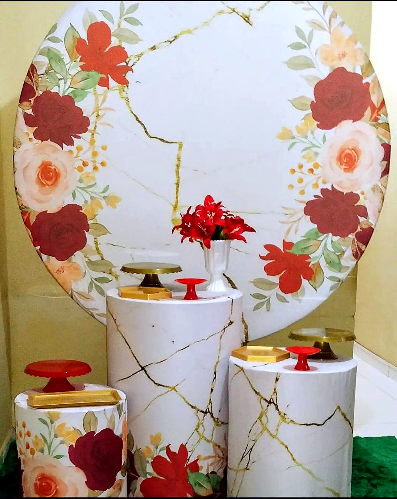
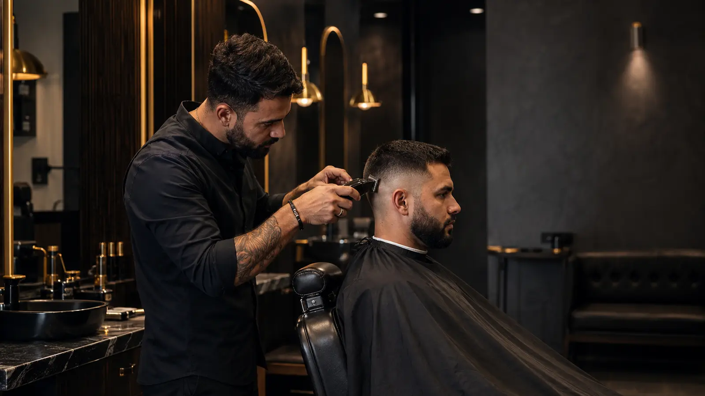
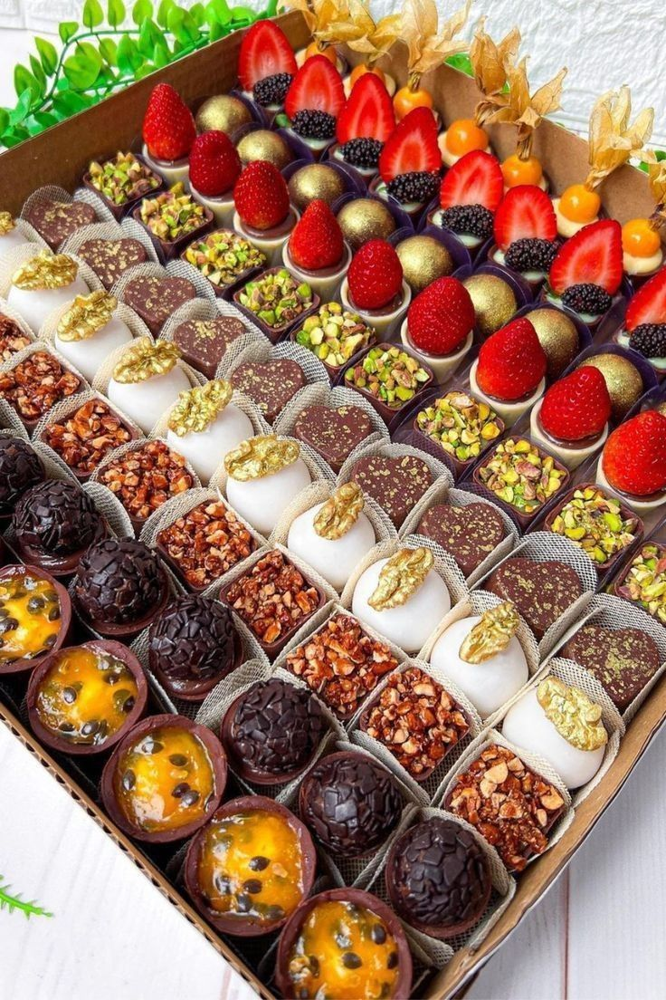
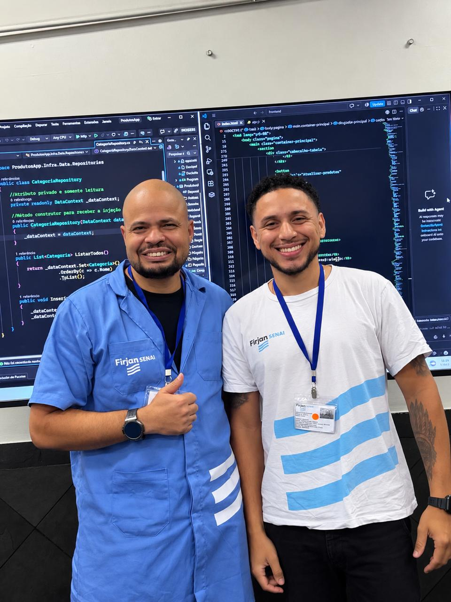

Pedidos e agendamentos
Reunir escolhas, datas e dados do cliente antes do atendimento.
Ver JSilva Sonhos ↓Ver Prime Club ↓DESENVOLVEDOR BACK-END JÚNIOR · NITERÓI/RJ
Pedidos no WhatsApp, informações espalhadas e tarefas repetitivas pedem organização. Minha base é C#, .NET e SQL; aplico o que aprendo em projetos web e avanço nos estudos de sistemas, APIs e integrações.
Busco uma oportunidade como Back-End Júnior. Também estou aberto a projetos e colaborações.
FORMAÇÃO BACK-END · SENAI01 / SOLUÇÕES
Começo pelo processo: quem usa, quais informações precisa e onde o trabalho se perde. A tecnologia entra para organizar esse caminho.
Reunir escolhas, datas e dados do cliente antes do atendimento.
Ver JSilva Sonhos ↓Ver Prime Club ↓Estruturar informações e regras de negócio com a base que desenvolvi em C#, .NET, SQL e MySQL.
Conhecer minha base técnica ↓Avançar na comunicação entre sistemas e na automação de tarefas repetitivas, com novos projetos de estudo.
Acompanhar os próximos estudos ↓02 / PROJETOS
O problema, as decisões e a entrega de cada projeto. Sites publicados, demonstrações e estudos acadêmicos apresentados com seu contexto.

Diagrama conceitual do fluxo de reserva.
Da identidade visual ao catálogo interativo de decoração Pegue e Monte.
Escolher um serviço e reservar um horário com regras claras.

Na implementação analisada, a data, o horário e o profissional formam uma chave única no banco. Uma tentativa duplicada recebe resposta HTTP 409 e orienta a escolha de outro horário. A proteção fica no banco, além da lista de horários disponíveis na interface.
Identidade visual, comunidade e uma experiência web interativa.
A composição de abertura reserva uma área para a mensagem principal. As imagens de comunidade reforçam a ideia de encontro. Tipografia, navegação e apresentação no Canva organizam o mesmo universo visual em diferentes formatos.
Um site institucional que facilita conhecer o cardápio e encontrar o contato.

Exercício acadêmico de planejamento estratégico e design visual para a Escola Zion. O desafio é fictício, assim como os dados de contato e endereço; a entrega é um site demonstrativo publicado.
Visual Design Web e IA aplicada em um espaço dedicado aos experimentos criativos.
03 / BASE TÉCNICA
Back-end, desenvolvimento web e Visual Design Web para conectar funcionalidade, clareza e identidade visual.
C# · .NET · APIs REST
Formação voltada ao desenvolvimento de sistemas e serviços.
SQL · MySQL
Organização das informações que sustentam cada aplicação.
HTML · CSS · JavaScript
Apresentação e navegação para tornar as soluções mais claras.
Identidade visual · Imagens com IA · Canva
Criação de imagens, composição visual e apresentações com apoio de IA para comunicar a identidade de cada projeto.
NA PRÁTICA / COMO TRABALHO
Escutar a necessidade e identificar o problema.
Definir o fluxo e os dados da solução.
Desenvolver pensando em quem vai usar.
Verificar o funcionamento dos caminhos.
Revisar e melhorar com consistência.
04 / SOBRE MIM

Minha base é back-end. Minha prática começa com problemas concretos.
Sou Otávio Moretti, desenvolvedor Back-End Júnior em Niterói/RJ. Minha formação no SENAI reúne C#, .NET, SQL, MySQL e APIs REST. Busco minha próxima oportunidade para aprofundar essa base trabalhando com sistemas e dados.
Nos projetos web, trabalho a organização do conteúdo, os fluxos de uso e as interações. O JSilva Sonhos, por exemplo, conecta a escolha de itens a um pedido de orçamento mais organizado pelo WhatsApp.
Também estudo Visual Design Web e uso IA como apoio à exploração de imagens e conceitos. Reúno essa parte autoral no Laboratório Criativo, enquanto avanço nos estudos de APIs, automações e integrações.